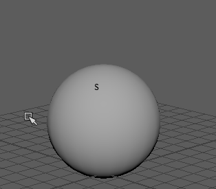

打开软修改变形器
- 从菜单栏中，选择
- 在“装备”(Rigging)菜单集中，选择
- 在“动画”(Animation)菜单集中，选择
- 在“建模”(Modeling)菜单集中，选择
“软修改工具”(Soft Modification Tool)是带变量衰减属性的变形器，可用于推拉 3D 几何体，就像雕塑家推拉粘土模型以修改其形状一样。颜色反馈用于显示组件或曲面上的变形器的影响区域。
默认情况下，推/拉中心的变形量最大，从中心向外逐渐衰减。可以控制变形的衰减以创建各种变形效果。

有关 softMod 变形器节点属性，请参见 Maya 技术文档中的 softMod 命令。
使用注释
-
由于“软修改”控制一个点集（CV、顶点）且可以指定其影响程度，所以“软修改”(Soft Modification)的作用类似于变形器。
-
“软修改”(Soft Modification)将生成一个单独的 softMod 节点，以产生可设置动画的变换。
- 通过调整“软修改选项”(Soft Modification Options)、软修改操纵器和 softMod 节点属性，可以控制软修改效果。在“软修改选项”(Soft Modification Options)中设置工具选项会影响下一个软修改，而非当前软修改。若要调整当前软修改选项，则需使用“属性编辑器”(Attribute Editor)调整 softMod 节点属性。
- 若同时打开“未选择遮罩”(Mask Unselected)和“在当前选择周围衰减”(Falloff Around Selection)选项，则选定顶点的移动方式类似于对顶点进行“移动工具”(Move Tool)操作。也就是说，只移动选定顶点，且不会因为产生遮罩会出现衰减。
- “软修改工具”(Soft Modification Tool)类似于“成比例修改工具”(Proportional Modification Tool)（）。但是，“软修改工具”(Soft Modification Tool)提供历史记录，并能进行更好的控制（例如，对衰减和颜色反馈的控制）。“成比例修改工具”(Proportional Modification Tool)只用于组件。“软修改工具”(Soft Modification Tool)可用于组件、对象或多个对象。“成比例修改工具”(Proportional Modification Tool)只适用于多个 NURBS 曲面。“软修改工具”(Soft Modification Tool)可用于任意曲面类型的多个曲面。可结合编辑成员身份工具使用“软修改工具”(Soft Modification Tool)。